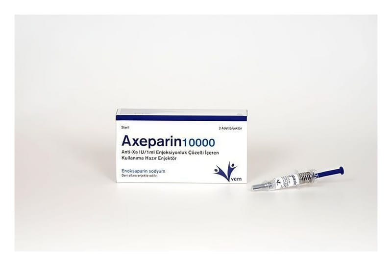

Axeparin 10.000 Anti Xa IU/1 ml Enjeksiyonluk Çözelti İçeren Kullanıma Hazır Enjektör, 2 Adet

Ne için kullanılır
KT · Bölüm 1 AXEPARİN, 1 ml’de 100 mg enoksaparin sodyum etkin maddesini içerir. Her 1 ml’lik steril çözelti 100 mg enoksaparin sodyum’a eşdeğer 10000 anti-Xa IU içerir. 1 mg (0,01 ml) enoksaparin sodyum yaklaşık 100 anti-Xa IU’ya karşılık gelir. Bu ilacı kullanmaya başlamadan önce KULLANMA TALİMATINI dikkatlice okuyunuz, çünkü sizin için önemli bilgiler içermektedir. Bu kullanma talimatını saklayınız. Daha sonra tekrar okumaya ihtiyaç duyabilirsiniz. Eğer ilave sorularınız olursa, lütfen doktorunuza veya eczacınıza danışınız. Bu ilaç kişisel olarak sizin için reçete edilmiştir, başkalarına vermeyiniz. Bu ilacın kullanımı sırasında, doktora veya hastaneye gittiğinizde doktorunuza bu ilacı kullandığınızı söyleyiniz. Bu talimatta yazılanlara aynen uyunuz. İlaç hakkında size önerilen dozun dışında yüksek veya düşük doz kullanmayınız.
Enoksaparin sodyum, domuz bağırsak mukozasından türetilen heparin benzil esterin alkalin depolimerizasyonuyla elde edilen biyolojik bir maddedir. AXEPARİN, 100 mg enoksaparin sodyum’a eşdeğerdir. İlaç kutusunun içinde 2 adet 1 ml’lik kullanıma hazır enjektör bulunur. AXEPARİN düşük molekül ağırlıklı heparinler adı verilen bir ilaç grubuna dâhildir. Vücudunuzdaki toplardamarlar içinde, istenmeyen kan pıhtılarının oluşmasını önlemek için ve/veya oluşan pıhtıları tedavi etmek için kullanılır. Bu ürün bir biyobenzerdir.
AXEPARİN aşağıdaki nedenlerden biri veya birkaçının tedavisinde kullanılır: - Genel cerrahi ya da ortopedik cerrahi girişimlerden sonra toplardamarlarınızda (venlerinizde) istenmeyen kan pıhtılarının oluşmasını engellemek için - Ani hastalıklarda (örneğin, kalp yetmezliği, solunum yetmezliği, enfeksiyonlar ve romatizmal hastalıklar) yatağa bağlı kaldığınızda toplardamarlarınızda (venlerinizde) gelişen istenmeyen kan pıhtılarının oluşmasını engellemek için - Beraberinde akciğer damarlarınızın bir pıhtı ile tıkanması mevcut olsun veya olmasın, Derin Ven Trombozu (DVT) adı verilen genellikle bacak toplardamarlarının bir pıhtıyla tıkanmasıyla oluşan klinik durumu tedavi etmek için - Kararsız anjinayı (kalp damarlarının tıkanması sonucu gelişen göğüs ağrısı) ve belli bir tipteki kalp krizini (Q dalgasız miyokard infarktüsü) tedavi etmek için aspirinle birlikte kullanılmak üzere - Diyaliz sırasında kanınızın cihazın tüplerinin içinden geçerken pıhtılaşmasını önlemek için (diyaliz; böbreklerin kanı temizleme işlevini yerine getirememesi nedeniyle, hastanın kanının belli aralıklarla özel bir cihaz içinden geçirilerek temizlenmesi işlemidir) - Kendini EKG’de ST-segment yükselmesi şeklinde özel bir bulguyla gösteren ve kalp kasına yeterince kan gitmemesinden kaynaklanan, akut ST-yükselmesi olan miyokard infarktüsü (STEMI) adı verilen klinik durumu tedavi etmek için (Size tıbbi tedavi uygulanmış olsa da ya da daha sonra perkütan koroner girişim (PCI) adı verilen bir uygulama yapılmış olsa da doktorunuz size bu ilacı reçetelemiş olabilir)